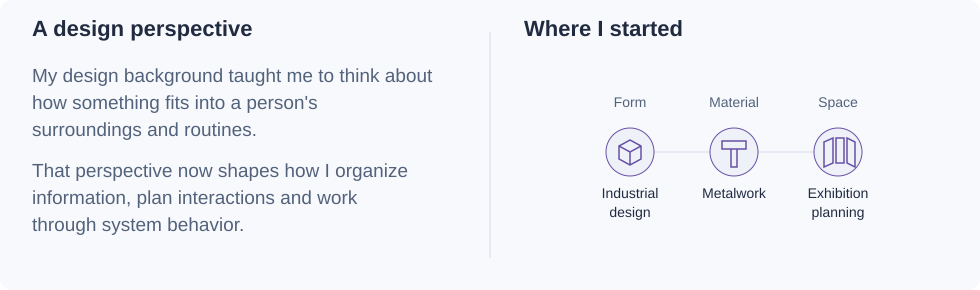

![Understand the situation: Start with what someone is trying to do, what they already know, and where they need help. Different roles often need different paths through the same information. Work through the awkward parts: Missing information, permissions and interrupted steps all affect the experience. I use workflows and diagrams to make those decisions explicit. Give the idea a form: Prototypes make a proposed experience easier to examine. They help me spot gaps, reconsider the scope and work through practical constraints.](assets/experience-dark.svg)